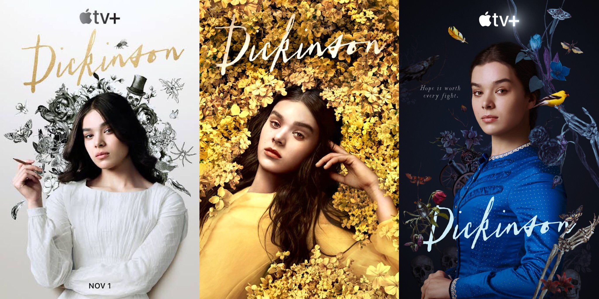
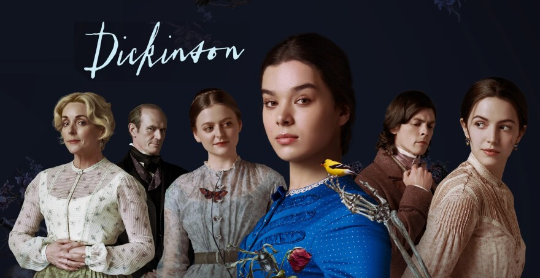
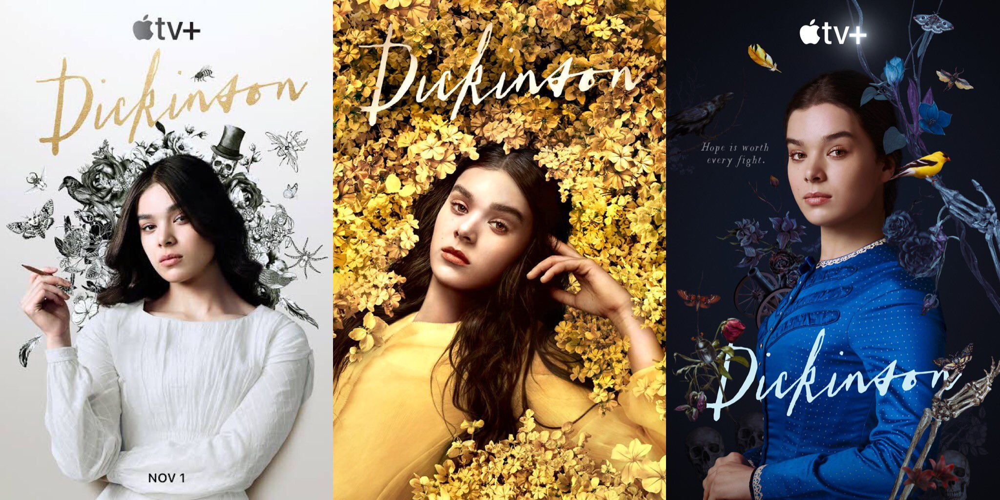

Banner das 3 temporadas - Uma estética jamais vista antes


SobreDickinson é uma série de televisão de comédia e drama histórico sobre Emily Dickinson, que foi criada por Alena Smith e produzida para a plataforma Apple TV+. Estrelada por Hailee Steinfeld como Dickinson, a primeira temporada teve seu lançamento em 1 de novembro de 2019, quando a Apple TV+ estreou. A segunda temporada foi encomendada em outubro de 2019, e a terceira temporada foi confirmada em outubro de 2020, antes do lançamento da segunda temporada. A segunda temporada foi lançada em 8 de janeiro de 2021 e a terceira e última temporada estreeou em 5 de novembro de 2021. |
PremissaDickinson se passa "durante a era de Emily Dickinson com uma sensibilidade e tom modernos. Leva os espectadores ao mundo de Emily, explorando de forma audaciosa as restrições da sociedade, do gênero e da família da perspectiva de uma escritora iniciante que não se encaixa em seu próprio tempo através de seu ponto de vista tão imaginário. Dickinson é a história da maioridade de Emily, retratando a luta de uma mulher para fazer sua voz ser ouvida." |
Recepção
Crítica: O site agregador de resenhas Rotten Tomatoes relatou uma taxa de aprovação de 74% com uma classificação média de 6,45/10, com base em 62 críticos para a primeira temporada da série. O consenso crítico do site diz: "Audacioso e aspiracional, a mistura ousada de drama de época e milieu milenar de Dickinson definitivamente não será para todos, mas aqueles que procuram se libertar da estagnação de sua vida de espectadores podem encontrar algum tipo de esperança em sua visão singular." Já o Metacritic, que usa uma média ponderada, atribuiu uma pontuação de 66 em 100 com base em 29 críticos, indicando "críticas geralmente favoráveis".
A segunda temporada foi aclamada universalmente. Ela possui um índice de aprovação de 100% no Rotten Tomatoes com base em 15 avaliações e classificação média de 7.85/10. O consenso crítico do site diz: "Com uma escrita mais forte e uma Hailee Steinfeld nunca melhor, Dickinson encontra um equilíbrio mais seguro em sua segunda temporada sem perder nenhum de seus estranhos prazeres." No Metacritic, a segunda temporada tem uma pontuação de 81 em 100 com base em 8 críticos, indicando "aclamação universal".
|
PrêmiosO show foi indicado no 31º Anual GLAAD Media Awards de Melhor Série de Comédia. O programa ganhou um Prêmio Peabody na categoria Entretenimento, tornando-se o primeiro programa da Apple TV+ a ganhar a prestigiosa homenagem. |
